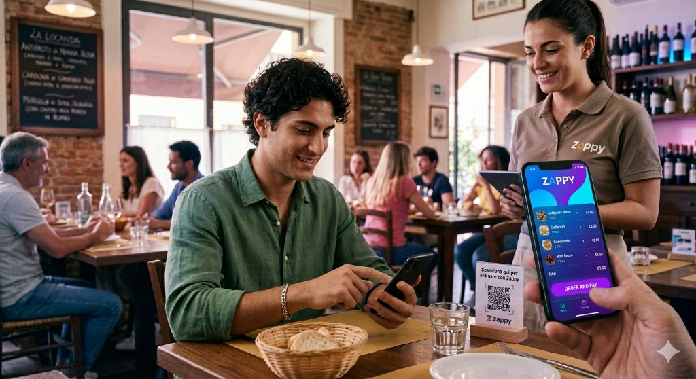

1 · Arriva al tavolo
Trova il QR (plexiglass, tovaglietta, sticker premium). Scansiona con la fotocamera: si apre il menu del locale, già legato al tavolo giusto.
Dal tavolo alla cucina
Qui sotto trovi il percorso completo — con esempi realistici di come Zappy coordina cliente, sala e back-office senza inciampi.

Veloce, chiaro, senza dover interrompere una conversazione per chiamare il cameriere.
Trova il QR (plexiglass, tovaglietta, sticker premium). Scansiona con la fotocamera: si apre il menu del locale, già legato al tavolo giusto.
Aggiunge piatti e bevande, note per allergie o preferenze. Vede tempi e disponibilità aggiornati dalla dashboard.
L’ordine compare istantaneamente in sala. La stampa parte dove serve — bar o cucina — senza riscritture a mano.
SincronizzatoChiude il conto dal telefono quando vuole: meno attese in cassa, più rotazione dei tavoli in ore di punta.
Tre motivi concreti che rendono Zappy più veloce per i clienti e più efficiente per il locale.
Ogni tavolo ha un QR univoco: il cliente lo scansiona e ordina in autonomia dal proprio telefono, senza contatto e senza attese. Più veloce per i clienti e per il locale: diventa moderno ed efficiente.
Dopo aver ordinato, il cliente paga direttamente dal telefono con carta, Apple Pay o Google Pay. Niente file, niente POS, tutto integrato in modo sicuro. Lo scontrino si stampa in tempo reale e il locale lavora meglio.
Con lo Starter Kit base, l’ordine arriva subito alla stampante del bar o cucina. Con lo Starter Kit Pro l’ordine arriva anche sul tablet, dove puoi gestirlo o stamparlo. Tutto è chiaro e tracciato: si prepara, si serve. Più velocità, meno errori.
Tre amici al tavolo 14 ordinano in due ondate. Zappy mantiene il filo unico: stesso tavolo, ordini separati ma tracciati.

Il cliente vede semplicità. Il locale vede processi: permessi, aggiornamenti menu, coerenza tra sedi.
Modifiche da dashboard propagate in secondi — niente PDF stampati obsoleti.
Meno micro-interruzioni in sala: il team segue la coda, non le mani alzate.
Prodotti trainanti, orari di picco, tempi medi: decisioni basate su numeri reali.